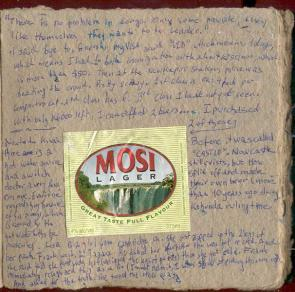

|
|
|
|
|  |
After waking up and having some of my crazy Indian sandwiches, I decided to go meet the Muzungus (white people) that I saw on the train. I find a couple from the UK, Joe (she) and Dean (he), then quickly another girl, Lisa, who said was traveling with Lucy. Joe started traveling in February from the Philippines then went to Australia, then to Africa, where she met Dean in Johannesburg. Lisa and Lucy have been traveling together since January, and started from China, then Australia, and eventually Africa, where they met Joe and Dean.
At first when I met the couple, I was like "oh shit. that's just the worse, 'cuz' couples are always pretty closed to themselves when they travel". Then I met Lisa and was very excited. She is a very happy girl. I showed them where the first class lounge was and they were happy to enjoy it, although they were in second class (no more tickets in first class for them).
These first days were characterized by my surprise on how much noise the trains made when stopping and starting. My final conclusion was the mechanism between each wagon, which is not lubricated and thus makes a hell of a noise when compressing and expanding. Not only the noise, but the jerk too, since it would move all of a sudden.
| Previous | Home | Next |
{kind=link}